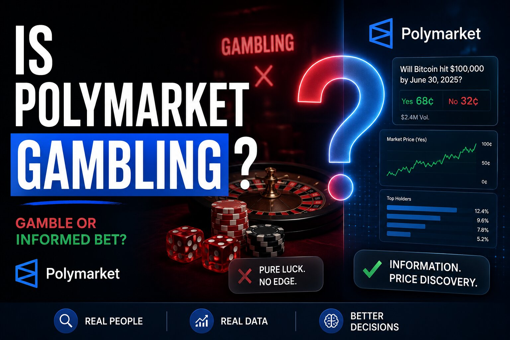

Is Polymarket Gambling? The Case for Both Sides

The short answer
There isn't a single settled answer, and that's not a dodge — it's the actual state of the law and the debate in mid-2026. Federal regulators classify Polymarket as a derivatives exchange trading event contracts, not a gambling operation, and it holds a CFTC license on that basis. Several US states disagree and have moved to block or restrict it under their own gambling statutes, arguing the underlying activity — staking money on the outcome of a sports game or an election — is gambling regardless of what the contract is called. Consumer-protection researchers add a third angle: even if the legal classification lands one way, the interface and psychology of using the platform can function like gambling for some users either way.
The case that it isn't gambling
Polymarket's own framing, and the CFTC's, rests on a structural distinction rather than a moral one. A gambling product typically has a house that sets fixed odds and profits when the customer loses. Polymarket doesn't do either: it runs a peer-to-peer order book where traders set prices themselves, and the platform makes money from fees, collateral yield, and data licensing regardless of which side of any given contract wins. Under this framing, a Polymarket contract functions more like a listed derivative — similar in structure to a futures or options contract — where price reflects the aggregated beliefs of participants rather than a bookmaker's line.
There's also a research case for the platform's usefulness beyond entertainment. Prediction market prices have been shown in multiple studies to forecast certain outcomes — economic indicators, elections — more accurately than expert consensus or polling, particularly during sudden, unexpected shifts where traditional forecasting lags. Proponents argue this "skin in the game" mechanism, where being wrong costs you money, extracts real information that pure opinion polling can't, and that this information-aggregation function is fundamentally different in purpose from a slot machine or a sportsbook parlay, even when both involve risking money on an uncertain outcome.
The case that it is gambling
Critics argue the structural distinction doesn't survive contact with how people actually use the platform, especially for sports and pop-culture markets. Betting on which team wins a game or who takes home an awards-show trophy has none of the "skin in the game" information-discovery value claimed for election or economic markets — it's a wager on an outcome the bettor has no special insight into, priced through an exchange mechanism instead of a bookmaker's odds, but functionally indistinguishable from a sportsbook bet to the person placing it. Multiple states have taken this position directly, arguing that regardless of federal derivatives classification, the underlying conduct — staking money on a game's result — falls squarely under state gambling law, which exists specifically to license, tax, and regulate exactly this kind of activity, including age verification and problem-gambling safeguards that a derivatives exchange isn't required to provide.
Consumer-protection researchers raise a related but distinct concern: regardless of how the underlying contract is legally classified, an interface with real-time price movement, rapid win/loss resolution, and easy repeat participation can produce the same behavioral patterns associated with gambling addiction, and there's no formal clinical diagnosis yet specific to prediction-market use — clinicians generally rely on standard problem-gambling criteria when assessing it. That argument doesn't depend on resolving the legal question at all; it's a claim about product design and user psychology that applies whether or not a court ultimately calls Polymarket a gambling platform.
Where the legal fight actually stands
Polymarket operates in the US today through a CFTC-licensed exchange, following a 2025 settlement that ended a multi-year ban on American users. That federal approval is genuine and current. It hasn't ended the dispute, though — several states have issued cease-and-desist orders, filed lawsuits, or pursued other enforcement action against Polymarket specifically over sports-related contracts, arguing state gambling law still applies regardless of federal derivatives status. Federal courts have ruled inconsistently on whether CFTC oversight preempts state gambling authority, and the question remains genuinely unresolved as of mid-2026, playing out state by state and case by case rather than through one definitive ruling. A federal bill that would explicitly classify prediction markets as gambling has been introduced in Congress but hadn't advanced out of committee as of this writing.
Outside the US, the picture varies by country's existing gambling framework rather than by any global consensus. Some jurisdictions have blocked the platform outright on the grounds that it constitutes unlicensed online gambling; others, including under some interpretations of Islamic finance principles, classify it as prohibited speculation on similar grounds. Other countries have taken no specific action either way, treating it as falling outside their existing gambling statutes.
Bottom line
Whether Polymarket "is" gambling depends heavily on which lens you apply. Judged by its market structure and its stated purpose, it looks more like a financial exchange than a casino — no house edge, no bookmaker-set odds, and a genuine, research-supported forecasting function in categories like elections and economics. Judged by what a person betting on a sports outcome is actually doing and how the product feels to use, the distinction is much harder to see, and several state regulators and consumer advocates argue it shouldn't matter legally at all. Both positions are being argued in good faith by serious people right now, and the legal question specifically remains open — treat any confident claim that it's "obviously" one or the other as reflecting one side of an active dispute rather than a settled fact.
Disclaimer: This post is for informational purposes only and is not legal, financial, or medical advice. Prediction market trading carries genuine risk of financial loss regardless of how it's legally classified. Legal status varies by jurisdiction and is actively changing — confirm current rules for your location before trading. If you're concerned about your own or someone else's gambling-like behavior with prediction markets or elsewhere, the National Council on Problem Gambling helpline (1-800-522-4700) offers confidential support.